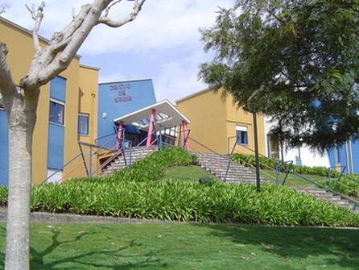

Ucc Albergaria-A-Velha
Quem Somos
O que Fazemos
About
Home
Quem Somos
O que Fazemos
About
É uma unidade de prestação de cuidados de saúde, apoio psicológico e social, de âmbito domiciliário e comunitário, direcionando a sua ação para pessoas e grupos mais vulneráveis em situação de maior risco ou dependência física funcional ou de doença, que requeira acompanhamento próximo.
